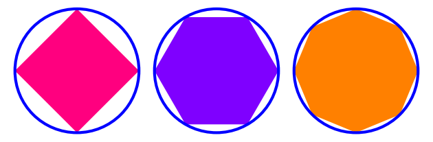

The method of exhaustion is a technique invented in Ancient Greece to calculate areas of curvilinear plane figures by way of successive approximation, using a sequence of inscribed, or circumscribed, polygons.
Antiphon of Athens was the first to apply the method of exhaustion to the calculation of the area of a circle. His method was further developed by Bryson of Heraclea and, later, Eudoxus of Cnidus, the latter of whom formalized Antiphon and Bryson's method into a rigorous procedure. Euclid drew upon Eudoxus in book XII of the Elements. This technique prefigured the development of integral calculus in the 17th century.
